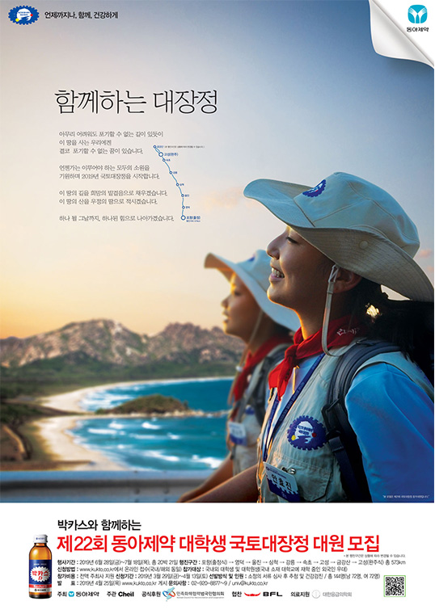
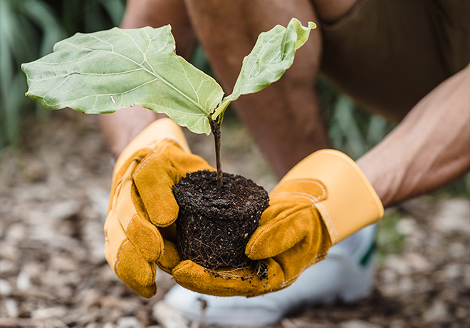
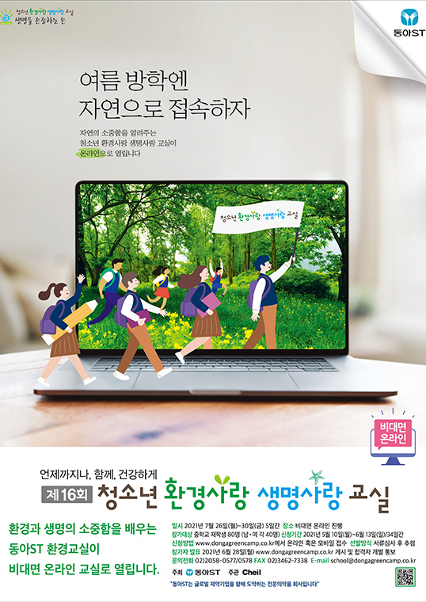
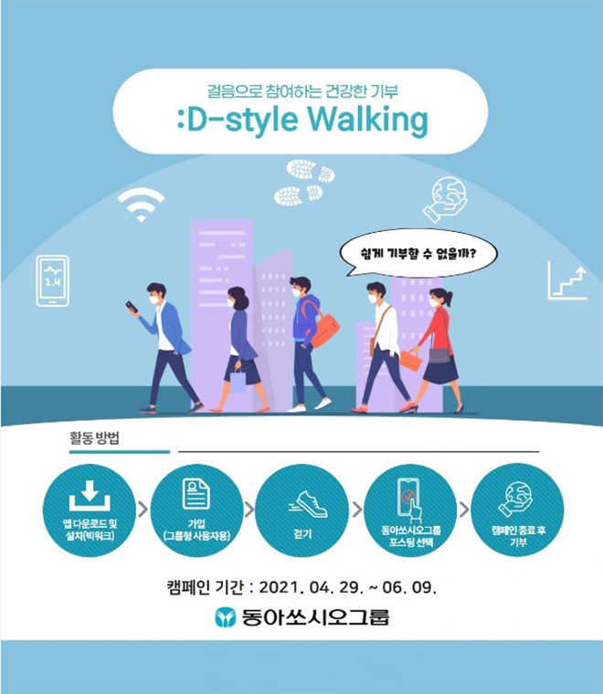

사회공헌체계
구성원 • 고객 • 사회의 건강과 행복
동아쏘시오그룹은 '함께성장'의 사회공헌 철학을 바탕으로 기업으로서 사회적 책임을 다하고자 노력하고 있습니다.
- 건강
- 국민과 사회의
건강증진
- 사회
- 사회구성원 모두의
행복한 삶
- 환경
- 미래 세대를 위한
깨끗한 환경
- 사람
- 사회적 책임을
다하는 인재육성
'건강' '환경' '사람' '사회' 사업영역에서 다양한 사회공헌 사업을 전개하고 있으며 임직원의 자발적인 참여 문화 구축에도 앞장서고 있습니다.
사회공헌활동
-

- 대학생 국토대장정 (1998~현재)
- 1998년 시작된 대학생 국토대장정은 남녀 각 72명씩, 총 144명의 대학생이 20박 21일 동안 직접 우리 땅을 두 발로 걸어 완주하는 행사입니다.
- 본 행사는 온실 속의 화초처럼 자란 대학생들에게 자신을 이기는 강인한 정신력을 기르고 남에 대한 배려와 동료애를 몸소 체험하도록 하자는 강신호 회장의 의지로 시작되었습니다.
- 동아제약은 참가 대학생들이 이러한 경험을 바탕으로 앞으로 닥쳐올 여러 장애물들을 슬기롭게 극복할 수 있는 내적인 힘을 기르고, 나아가 국가 발전에 기여할 수 있는 강인한 인재로 성장하길 바랍니다.
-

- 평화의숲 조성사업
- 동아ST는 평화의 숲을 통하여 분쟁과 갈등으로 훼손된 접경지역의 자연을 복구하고, 다양한 생물이 살아갈 수 있는 환경을 만들어 자연과 인간이 조화롭게 공생할 수 있는 생태계를 구축하고자 합니다.
- 평화의 숲은 향후 30년 간 약 350톤에 달하는 이산화탄소를 저감하는 효과를 낼 것으로 기대됩니다.
- 향후, 철원군과 협력하여 평화의 숲을 학생과 관광객 등을 위한 생태·역사·안보 교육을 실시하는 공간으로 만들어갈 예정입니다.
-

- 청소년 환경사랑 생명사랑 교실
- 자연 속에서 환경과 생명의 소중함을 느끼다.
- 2005년 환경전문가 육성을 목적으로 시작된 청소년 환경사랑 생명사랑 교실은 남녀 중학생 각 30명씩, 총 60명의 참가자들이 4박 5일 간 자연 속에서 환경의 소중함, 환경 보호 실천방법을 배우는 행사입니다.
- 본 행사는 과도한 입시경쟁 속에 묻혀 있는 청소년들을 위해 무심코 지나칠 수 있는 풀 한 포기, 작은 곤충 한 마리의 소중함을 일깨우며 참가자들은 산과 강 등 자연 생태를 경험하고 또래 친구들과 토의할 수 있는 기회를 제공합니다.
-
- 마로니에 여성 백일장
- 문학의 꿈을 펼치다.
- 마로니에 여성 백일장은 한국문학의 저변확대와 여성 문학인 발굴을 위해 1983년 부터 한국문화예술위원회가 주최하고 수석문화재단과 동아제약, 동아ST, 동아쏘시오홀딩스가 후원하는 여성 백일장입니다.
- 여성이면 누구나 참여가 가능하며 시,산문,아동 문학 3개 부문에서 부문별로 장원, 우수상, 장려상, 입선을 선발하여 상금 및 상장 수여를 합니다.
-

- 비대면 자원봉사 :D-style Walking
- :D-style Walking은 동아쏘시오그룹 전 임직원의 자발적 걸음으로 기부하는 비대면 캠페인입니다
- 사용자 참여형 걸음기부 플랫폼 “bigWalk”와 함께 코로나19로 사회공헌 활동을 비대면으로 전환해 임직원의 건강증진과 건강한 기부문화를 조성하기 위해 마련되었습니다.
- 2021년 상반기 1,536명, 하반기 1,032명의 임직원이 참여하였으며, 매년 2회씩 캠페인을 전개할 예정입니다. 걸음으로 조성된 기부금은 사회적문제를 해결하는 곳에 사용될 예정입니다.